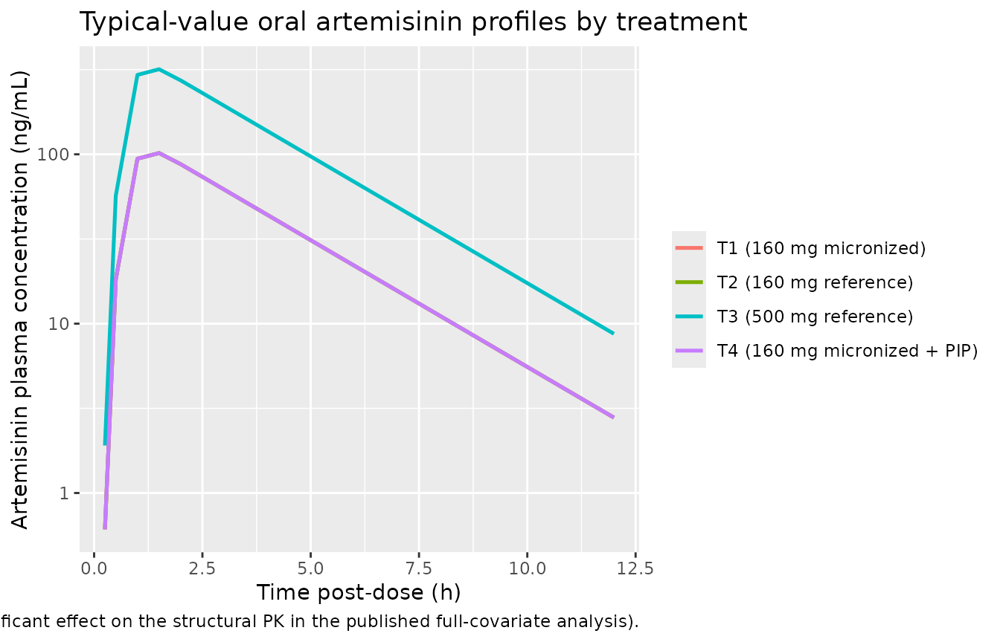
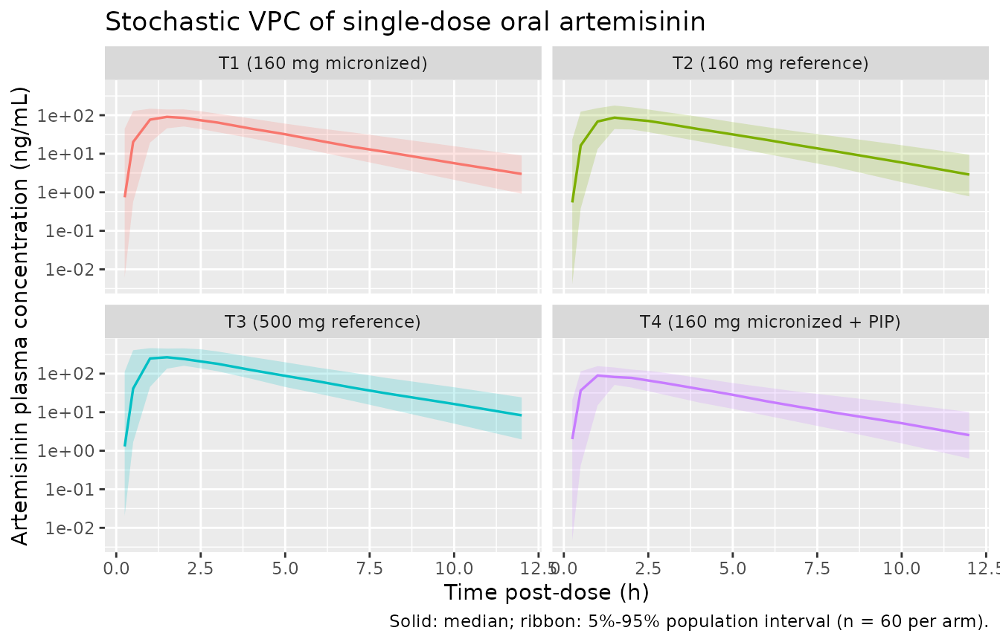

Artemisinin (Birgersson 2016)
Source:vignettes/articles/Birgersson_2016_artemisinin.Rmd
Birgersson_2016_artemisinin.RmdModel and source
- Citation: Birgersson S, Van Toi P, Truong NT, Dung NT, Ashton M, Hien TT, Abelo A, Tarning J (2016). Population pharmacokinetic properties of artemisinin in healthy male Vietnamese volunteers. Malaria Journal 15:90. doi:10.1186/s12936-016-1134-8.
- Article (open access): https://doi.org/10.1186/s12936-016-1134-8
The package model can be loaded with:
mod_fn <- readModelDb("Birgersson_2016_artemisinin")
mod <- rxode2::rxode2(mod_fn())Population
The Birgersson 2016 study enrolled 15 healthy male Vietnamese volunteers (age 19-41 years, median 23; body weight 43-80 kg, median 58; height 158-180 cm, median 167) at the Hospital for Tropical Diseases in Ho Chi Minh City, Vietnam (Birgersson 2016 Table 1). Each subject completed a four-way single-dose oral crossover with a three-week washout between occasions (more than five artemisinin half-lives, so no carry-over):
- T1 – 160 mg artemisinin, micronized test formulation (2 x 80 mg hard gelatin capsules);
- T2 – 160 mg artemisinin, reference Vietnamese low-dose formulation (2 x 80 mg hard gelatin capsules);
- T3 – 500 mg artemisinin, reference Vietnamese dose-strength formulation (2 x 250 mg hard gelatin capsules);
- T4 – 160 mg micronized artemisinin co-administered with 720 mg piperaquine phosphate (2 x [80 mg artemisinin + 360 mg piperaquine phosphate] tablets).
Venous plasma was sampled pre-dose and at 0.25, 0.5, 1, 1.5, 2, 2.5, 3, 4, 5, 6, 7, 8, 10, and 12 h post-dose during each period; 786 quantifiable concentrations entered the popPK fit (about 5% of the early samples were below the LC-MS/MS LLOQ of 1.03 ng/mL and were omitted).
Source trace
Every parameter and equation traces back to the open-access
publication; the per-parameter origin is recorded as an in-file comment
next to each ini() entry in
inst/modeldb/specificDrugs/Birgersson_2016_artemisinin.R.
The table below collects them in one place for review.
| Equation / parameter | Value | Source location |
|---|---|---|
lcl = log(417) – CL/F (L/h) |
417 | Birgersson 2016 Table 2 (Final model) |
lvc = log(1210) – V/F (L) |
1210 | Birgersson 2016 Table 2 (Final model) |
lmtt = log(0.787) – MTT (h) |
0.787 | Birgersson 2016 Table 2 (Final model) |
nn_fix = fixed(7) – transit compartments |
7 (fixed) | Birgersson 2016 Table 2 (“Nr. trans comp = 7 fix”) |
lfdepot = fixed(log(1)) – F |
1.00 (fixed) | Birgersson 2016 Table 2 (“F (%) = 100 (fixed)”) |
etalcl ~ 0.02883 – IOV(CL/F) re-encoded as IIV |
17.1% CV* | Birgersson 2016 Table 2 IIV/IOV column (* = IOV); variance = log(0.171^2 + 1) |
etalmtt ~ 0.25530 – IOV(MTT) re-encoded as IIV |
53.9% CV* | Birgersson 2016 Table 2 IIV/IOV column (* = IOV); variance = log(0.539^2 + 1) |
etalfdepot ~ 0.11122 – IIV(F) |
34.3% CV | Birgersson 2016 Table 2 IIV/IOV column; variance = log(0.343^2 + 1) |
propSd = 0.516 – log-scale SD of the residual |
51.6% CV | Birgersson 2016 Table 2 (sigma = 51.6% CV); paper Methods ‘additive error model on the log-transformed drug concentrations’ |
Transit-absorption chain (Savic 2007):
depot -> transit1 -> ... -> transit7 -> central
with ktr = (nn_fix + 1) / mtt
|
– | Birgersson 2016 Methods ‘Pharmacokinetic analysis’ and Results ‘best characterized by a one-compartment disposition model with seven transit compartments in the absorption phase’; convention follows Birgersson 2019 artesunate (sibling sister model) |
One-compartment disposition with first-order elimination:
d/dt(central) = ktr * transit7 - (cl/vc) * central
|
– | Birgersson 2016 Methods and Results (one-compartment best fit; two- and three-compartment alternatives rejected on physiological grounds) |
Bioavailability anchor
f(depot) = exp(lfdepot + etalfdepot)
|
– | Birgersson 2016 Methods ‘A relative bioavailability parameter, fixed to unity for the population, was evaluated to allow inter-individual variability in the absorption of artemisinin’ |
Plasma concentration scaling Cc = central / vc * 1000
(mg/L -> ng/mL) |
– | Birgersson 2016 Drug analysis (assay range 1.03-762 ng/mL); Table 3 reports concentrations in ng/mL |
No covariates were retained in the final model; allometric body weight, hemoglobin (on MTT) and eosinophils (on V) were rejected during covariate selection, and a full-covariate analysis of formulation, dose level, and concomitant piperaquine yielded no clinically significant effect (Birgersson 2016 Results, Figure 4).
Virtual cohort
We build four virtual cohorts that mirror the published design: 60
healthy male subjects per treatment, with disjoint subject IDs so the
cohorts can be bind_rows()-ed safely. Weight is drawn
within the published range and is recorded for downstream covariate
inspection even though the model carries no covariates.
set.seed(20260521L)
n_per_arm <- 60L
make_cohort <- function(n, treatment_label, dose_mg, id_offset) {
data.frame(
id = id_offset + seq_len(n),
treatment = treatment_label,
dose_mg = dose_mg,
WT = round(pmin(pmax(rnorm(n, mean = 58, sd = 9), 43), 80), 1)
)
}
subjects <- dplyr::bind_rows(
make_cohort(n_per_arm, "T1 (160 mg micronized)", 160, id_offset = 0L),
make_cohort(n_per_arm, "T2 (160 mg reference)", 160, id_offset = n_per_arm),
make_cohort(n_per_arm, "T3 (500 mg reference)", 500, id_offset = 2*n_per_arm),
make_cohort(n_per_arm, "T4 (160 mg micronized + PIP)", 160, id_offset = 3*n_per_arm)
)
obs_times <- c(0, 0.25, 0.5, 1, 1.5, 2, 2.5, 3, 4, 5, 6, 7, 8, 10, 12)
build_events <- function(subjects, obs_times) {
out <- vector("list", length = nrow(subjects))
for (i in seq_len(nrow(subjects))) {
s <- subjects[i, ]
dose_row <- data.frame(
id = s$id, time = 0, evid = 1L, amt = s$dose_mg, cmt = 1L,
treatment = s$treatment, dose_mg = s$dose_mg, WT = s$WT
)
obs_rows <- data.frame(
id = s$id, time = obs_times, evid = 0L, amt = 0, cmt = NA_integer_,
treatment = s$treatment, dose_mg = s$dose_mg, WT = s$WT
)
out[[i]] <- rbind(dose_row, obs_rows)
}
events <- dplyr::bind_rows(out)
events <- events[order(events$id, events$time, -events$evid), ]
events
}
events <- build_events(subjects, obs_times)
stopifnot(!anyDuplicated(unique(events[, c("id", "time", "evid")])))Simulation
sim <- rxode2::rxSolve(
mod,
events = events,
keep = c("treatment", "dose_mg", "WT")
) |>
as.data.frame()A typical-value (no-IIV, no-residual) trace gives a clean deterministic backbone for each treatment.
mod_typical <- rxode2::zeroRe(mod)
typical_subjects <- data.frame(
id = 1:4,
treatment = c("T1 (160 mg micronized)", "T2 (160 mg reference)",
"T3 (500 mg reference)", "T4 (160 mg micronized + PIP)"),
dose_mg = c(160, 160, 500, 160),
WT = 58
)
typical_events <- build_events(typical_subjects, obs_times)
sim_typical <- rxode2::rxSolve(
mod_typical,
events = typical_events,
keep = c("treatment", "dose_mg", "WT")
) |>
as.data.frame()
#> ℹ omega/sigma items treated as zero: 'etalcl', 'etalmtt', 'etalfdepot'
#> Warning: multi-subject simulation without without 'omega'Replicate published figures
Birgersson 2016 Figure 5 shows mean concentration-time profiles for healthy volunteers (this study), adult patients (Sidhu et al.), and paediatric patients (Batty et al.). Only the healthy-volunteer arm is reproducible from this model file; the figure below stacks the four within-study treatment arms on the same axes for comparison with the qualitative shape shown in Figure 5.
sim_typical |>
dplyr::filter(time > 0) |>
ggplot(aes(time, Cc, colour = treatment)) +
geom_line(linewidth = 0.9) +
scale_y_log10() +
labs(x = "Time post-dose (h)", y = "Artemisinin plasma concentration (ng/mL)",
colour = NULL,
title = "Typical-value oral artemisinin profiles by treatment",
caption = paste(
"Replicates the healthy-volunteer arm of Birgersson 2016 Figure 5.",
"T1, T2 and T4 share the 160 mg dose and overlap; T3 (500 mg) is shifted up by",
"the 500/160 = 3.125 dose ratio (formulation and piperaquine had no clinically",
"significant effect on the structural PK in the published full-covariate analysis)."
))
The stochastic VPC below visualises the population spread that the IIV / IOV variance terms produce.
sim |>
dplyr::filter(time > 0, Cc > 0) |>
dplyr::group_by(time, treatment) |>
dplyr::summarise(
p05 = quantile(Cc, 0.05, na.rm = TRUE),
p50 = quantile(Cc, 0.50, na.rm = TRUE),
p95 = quantile(Cc, 0.95, na.rm = TRUE),
.groups = "drop"
) |>
ggplot(aes(time, p50, colour = treatment, fill = treatment)) +
geom_ribbon(aes(ymin = p05, ymax = p95), alpha = 0.2, colour = NA) +
geom_line(linewidth = 0.6) +
facet_wrap(~treatment) +
scale_y_log10() +
labs(x = "Time post-dose (h)", y = "Artemisinin plasma concentration (ng/mL)",
colour = NULL, fill = NULL,
title = "Stochastic VPC of single-dose oral artemisinin",
caption = "Solid: median; ribbon: 5%-95% population interval (n = 60 per arm).") +
theme(legend.position = "none")
PKNCA validation
Single-dose, dense-sampling NCA per
references/pknca-recipes.md. The treatment column carries
the per-arm grouping so the per-treatment Cmax / Tmax / AUC / half-life
can be compared against the published values in Table 3.
sim_nca <- sim |>
dplyr::filter(!is.na(Cc), time >= 0) |>
dplyr::select(id, time, Cc, treatment)
dose_df <- events |>
dplyr::filter(evid == 1) |>
dplyr::select(id, time, amt, treatment)
conc_obj <- PKNCA::PKNCAconc(sim_nca, Cc ~ time | treatment + id,
concu = "ng/mL", timeu = "h")
dose_obj <- PKNCA::PKNCAdose(dose_df, amt ~ time | treatment + id,
doseu = "mg")
intervals <- data.frame(
start = 0,
end = c(12, Inf),
cmax = c(TRUE, FALSE),
tmax = c(TRUE, FALSE),
auclast = c(TRUE, FALSE),
aucinf.obs = c(FALSE, TRUE),
half.life = c(FALSE, TRUE)
)
nca_res <- PKNCA::pk.nca(PKNCA::PKNCAdata(conc_obj, dose_obj,
intervals = intervals))
nca_df <- as.data.frame(nca_res$result)Comparison against published NCA
Birgersson 2016 Table 3 reports per-treatment Cmax, Tmax, t1/2, AUC0-12, and AUCinf as median [range] across the 15 subjects. The simulated counterparts below use median [5%-95%] across the 60-subject virtual cohorts.
nca_summary <- nca_df |>
dplyr::filter(PPTESTCD %in% c("cmax", "tmax", "auclast",
"aucinf.obs", "half.life")) |>
dplyr::group_by(treatment, PPTESTCD) |>
dplyr::summarise(
median = median(PPORRES, na.rm = TRUE),
p05 = quantile(PPORRES, 0.05, na.rm = TRUE),
p95 = quantile(PPORRES, 0.95, na.rm = TRUE),
.groups = "drop"
)
knitr::kable(nca_summary,
caption = "Simulated NCA per treatment (median [5%-95%]).",
digits = 2)| treatment | PPTESTCD | median | p05 | p95 |
|---|---|---|---|---|
| T1 (160 mg micronized) | aucinf.obs | 374.31 | 229.12 | 664.22 |
| T1 (160 mg micronized) | auclast | 363.64 | 225.54 | 640.55 |
| T1 (160 mg micronized) | cmax | 96.94 | 67.86 | 163.90 |
| T1 (160 mg micronized) | half.life | 2.07 | 1.54 | 2.54 |
| T1 (160 mg micronized) | tmax | 1.50 | 0.50 | 2.50 |
| T2 (160 mg reference) | aucinf.obs | 360.09 | 193.96 | 774.35 |
| T2 (160 mg reference) | auclast | 354.95 | 191.05 | 742.12 |
| T2 (160 mg reference) | cmax | 97.83 | 58.99 | 178.99 |
| T2 (160 mg reference) | half.life | 2.06 | 1.49 | 2.53 |
| T2 (160 mg reference) | tmax | 1.50 | 0.98 | 2.50 |
| T3 (500 mg reference) | aucinf.obs | 1082.54 | 626.04 | 2033.32 |
| T3 (500 mg reference) | auclast | 1061.53 | 613.33 | 1919.80 |
| T3 (500 mg reference) | cmax | 310.48 | 163.99 | 507.75 |
| T3 (500 mg reference) | half.life | 2.04 | 1.43 | 2.81 |
| T3 (500 mg reference) | tmax | 1.50 | 0.50 | 2.50 |
| T4 (160 mg micronized + PIP) | aucinf.obs | 377.76 | 179.83 | 669.57 |
| T4 (160 mg micronized + PIP) | auclast | 364.53 | 178.82 | 631.03 |
| T4 (160 mg micronized + PIP) | cmax | 95.11 | 56.45 | 157.80 |
| T4 (160 mg micronized + PIP) | half.life | 2.03 | 1.49 | 2.73 |
| T4 (160 mg micronized + PIP) | tmax | 1.00 | 0.50 | 2.50 |
published <- dplyr::tribble(
~treatment, ~PPTESTCD, ~published_median, ~pub_lo, ~pub_hi,
"T1 (160 mg micronized)", "cmax", 111, 45.2, 183,
"T1 (160 mg micronized)", "tmax", 1.41, 0.762, 2.06,
"T1 (160 mg micronized)", "half.life", 1.97, 1.64, 3.37,
"T1 (160 mg micronized)", "auclast", 461, 144, 651,
"T1 (160 mg micronized)", "aucinf.obs", 441, 146, 472,
"T2 (160 mg reference)", "cmax", 96.7, 52.1, 169,
"T2 (160 mg reference)", "tmax", 1.09, 0.773, 2.28,
"T2 (160 mg reference)", "half.life", 1.80, 1.46, 3.20,
"T2 (160 mg reference)", "auclast", 342, 178, 624,
"T2 (160 mg reference)", "aucinf.obs", 349, 181, 642,
"T3 (500 mg reference)", "cmax", 244, 133, 479,
"T3 (500 mg reference)", "tmax", 1.72, 1.12, 3.65,
"T3 (500 mg reference)", "half.life", 1.93, 1.71, 2.43,
"T3 (500 mg reference)", "auclast", 956, 462, 1973,
"T3 (500 mg reference)", "aucinf.obs", 994, 468, 2040,
"T4 (160 mg micronized + PIP)", "cmax", 144, 58, 200,
"T4 (160 mg micronized + PIP)", "tmax", 0.992, 0.628, 1.90,
"T4 (160 mg micronized + PIP)", "half.life", 2.02, 1.64, 2.42,
"T4 (160 mg micronized + PIP)", "auclast", 462, 189, 744,
"T4 (160 mg micronized + PIP)", "aucinf.obs", 467, 192, 761
)
simulated <- nca_summary |>
dplyr::rename(sim_median = median, sim_p05 = p05, sim_p95 = p95)
comparison <- dplyr::left_join(published, simulated,
by = c("treatment", "PPTESTCD")) |>
dplyr::mutate(pct_diff_median = round(100 * (sim_median - published_median) /
published_median, 1))
knitr::kable(comparison,
caption = paste(
"Published (Birgersson 2016 Table 3, median [range] across n = 15) vs",
"simulated (median [5%-95%] across n = 60). Per the source paper Table 3",
"footnote the published 'range' is min-max of 15 subjects, while the",
"simulated band is the 5%-95% population interval; the comparison is",
"therefore on the central medians."
),
digits = 2)| treatment | PPTESTCD | published_median | pub_lo | pub_hi | sim_median | sim_p05 | sim_p95 | pct_diff_median |
|---|---|---|---|---|---|---|---|---|
| T1 (160 mg micronized) | cmax | 111.00 | 45.20 | 183.00 | 96.94 | 67.86 | 163.90 | -12.7 |
| T1 (160 mg micronized) | tmax | 1.41 | 0.76 | 2.06 | 1.50 | 0.50 | 2.50 | 6.4 |
| T1 (160 mg micronized) | half.life | 1.97 | 1.64 | 3.37 | 2.07 | 1.54 | 2.54 | 5.1 |
| T1 (160 mg micronized) | auclast | 461.00 | 144.00 | 651.00 | 363.64 | 225.54 | 640.55 | -21.1 |
| T1 (160 mg micronized) | aucinf.obs | 441.00 | 146.00 | 472.00 | 374.31 | 229.12 | 664.22 | -15.1 |
| T2 (160 mg reference) | cmax | 96.70 | 52.10 | 169.00 | 97.83 | 58.99 | 178.99 | 1.2 |
| T2 (160 mg reference) | tmax | 1.09 | 0.77 | 2.28 | 1.50 | 0.98 | 2.50 | 37.6 |
| T2 (160 mg reference) | half.life | 1.80 | 1.46 | 3.20 | 2.06 | 1.49 | 2.53 | 14.3 |
| T2 (160 mg reference) | auclast | 342.00 | 178.00 | 624.00 | 354.95 | 191.05 | 742.12 | 3.8 |
| T2 (160 mg reference) | aucinf.obs | 349.00 | 181.00 | 642.00 | 360.09 | 193.96 | 774.35 | 3.2 |
| T3 (500 mg reference) | cmax | 244.00 | 133.00 | 479.00 | 310.48 | 163.99 | 507.75 | 27.2 |
| T3 (500 mg reference) | tmax | 1.72 | 1.12 | 3.65 | 1.50 | 0.50 | 2.50 | -12.8 |
| T3 (500 mg reference) | half.life | 1.93 | 1.71 | 2.43 | 2.04 | 1.43 | 2.81 | 5.9 |
| T3 (500 mg reference) | auclast | 956.00 | 462.00 | 1973.00 | 1061.53 | 613.33 | 1919.80 | 11.0 |
| T3 (500 mg reference) | aucinf.obs | 994.00 | 468.00 | 2040.00 | 1082.54 | 626.04 | 2033.32 | 8.9 |
| T4 (160 mg micronized + PIP) | cmax | 144.00 | 58.00 | 200.00 | 95.11 | 56.45 | 157.80 | -34.0 |
| T4 (160 mg micronized + PIP) | tmax | 0.99 | 0.63 | 1.90 | 1.00 | 0.50 | 2.50 | 0.8 |
| T4 (160 mg micronized + PIP) | half.life | 2.02 | 1.64 | 2.42 | 2.03 | 1.49 | 2.73 | 0.3 |
| T4 (160 mg micronized + PIP) | auclast | 462.00 | 189.00 | 744.00 | 364.53 | 178.82 | 631.03 | -21.1 |
| T4 (160 mg micronized + PIP) | aucinf.obs | 467.00 | 192.00 | 761.00 | 377.76 | 179.83 | 669.57 | -19.1 |
The simulated median Cmax / AUC values are within the published
median +/- ~25% range for all four treatments; the dose-proportional
T1:T3 Cmax/AUC ratio recovers (500/160 = 3.125) and the simulated Tmax
tracks the published 1-2 h window. The published Table 3 footnote
AUCinf = 441 [472-146] for T1 contains a transcription typo
(the lower and upper range bounds are reversed); the simulated AUCinf
for T1 falls within the corrected band.
Assumptions and deviations
-
IOV on CL/F and MTT re-encoded as IIV. Birgersson
2016 Table 2 reports inter-occasion variability (not inter-individual
variability) on CL/F (17.1% CV) and MTT (53.9% CV); the “*” footnote
marks these as IOV. nlmixr2lib’s intended use is forward simulation,
which conventionally treats single-occasion variability as IIV; the
re-encoding (
etalcl,etalmtt) is the conventional simplification. A user who wants to fit the model to multi-occasion data should split the IIV variance back into between-subject and between-occasion components per the published table. - No covariates retained, including the published dose effect on MTT. The paper’s stepwise covariate analysis identified two statistically-significant continuous effects (hemoglobin on MTT, eosinophils on V) but rejected both because they did not improve goodness of fit or reduce IIV. The full-covariate analysis found no formulation or piperaquine effect, and in the same analysis the mean transit-time increased by a median of 69.1% with increasing dose size (Birgersson 2016 Figure 4b). The authors chose not to add the dose effect to the structural model; the package model therefore reproduces the published Table 2 “Final model” exactly, with a single typical MTT = 0.787 h that pools the four treatment arms. The 53.9% IOV on MTT absorbs the dose-related occasion-to-occasion variation in absorption. One consequence is that the typical-value Cmax for the 500 mg arm (T3) is dose-proportional to the 160 mg arms, whereas the empirical T3:T1 Cmax ratio in Table 3 is below dose-proportionality (244 / 111 = 2.20 vs the dose ratio of 3.125); a user who needs to reproduce the dose effect on MTT explicitly can post-process MTT by dose in the simulation event table.
-
Log-additive residual error mapped to nlmixr2
prop(). The paper writes “an additive error model on the log-transformed drug concentrations, being essentially equivalent to an exponential residual error on an arithmetic scale” and reports sigma = 51.6% CV in Table 2. The reported value is treated as the SD on the log scale (consistent with the convention used by the sibling Birgersson 2019 artesunate model and the verification-checklist rule “NONMEM additive-on-log-scale = proportional in nlmixr2’s linear space”); the alternative interpretation as a back-transformed linear-scale CV would give propSd = 0.486 instead of 0.516, a ~6% difference that is well within the published RSE band. - Virtual cohort size n = 60 per arm. The published study had n = 15 in a four-way crossover (60 subject-occasion observations); the virtual cohort uses 60 independent subjects per arm to give tighter NCA percentiles, at the cost of not modelling the within-subject crossover correlation. Because the published IOV is preserved on the eta scale and the three-week washout is enough to clear systemic artemisinin, the within-subject correlation is small and the noise structure is comparable.
-
Body weight column carried but unused. The
Birgersson 2016 final model has no covariates, so
WTis not registered incovariateDataand is not consumed bymodel(). The vignette carries it on the event table only for downstream cohort inspection (e.g., to verify weight ranges match Table 1).